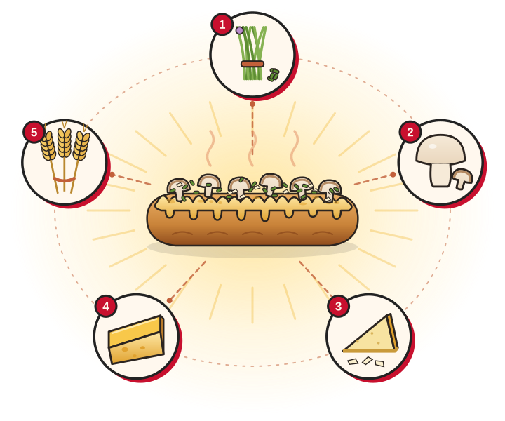
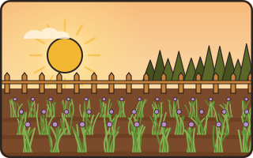
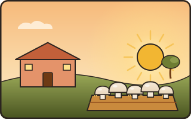
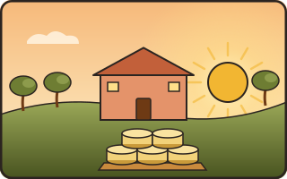
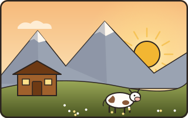
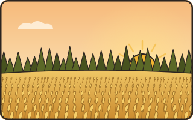

Zapi! Champignon
5,90 €
Abholung am Automaten, inkl. MwSt. · 220 g (26,82 €/kg)
In den Warenkorb- Abholung: am Automaten zu deiner Wunschzeit, mit QR-Code oder PIN. Keine Versandkosten.
- Nicht abgeholt? Dann verfällt der Betrag. Ausnahme: Zugverspätung.
- Rückgabe: frische Lebensmittel, siehe Widerrufsbelehrung.
Was steckt drin? Fahr über eine Zutat im Bild oder tipp sie an.
Was steckt drin?

Schnittlauch
Frisch geschnitten, grün und mild. Der Frischekick obendrauf.
Schnittlauch aus dem Kräutergarten Morgentau: Gezogen in sonnigen Beeten, geschnitten kurz vor dem Einsatz. Ein bisschen Grün, ganz viel Frische.

Champignons
In dicken Scheiben, kurz angebraten. Saftig und aromatisch.
Champignons vom Pilzhof Lindengrund: Gewachsen auf Stroh im ruhigen Pilzhof, jeden Morgen frisch geerntet. Kurze Wege, volles Aroma.

Parmesan
Hart, nussig, salzig. Macht die Kruste extra knusprig.
Parmesan vom Gut Olivenhain: Große Laibe, gereift zwischen Olivenbäumen. Fein gehobelt schmilzt er zu einer goldenen Knusperschicht.

Bergkäse
Würzig, cremig, zieht Fäden. Die Hauptrolle beim Überbacken.
Bergkäse von der Alm Wolkenblick: Die Kühe grasen den ganzen Sommer auf der Alm. Der Käse reift monatelang im kühlen Keller. Das schmeckst du in jedem Faden.

Baguette aus Weizen
Handwerklicher Teig, 24 Stunden gereift. Außen knackig, innen fluffig.
Weizen vom Hof Sonnenhang: Goldene Ähren vor dem Waldrand, gereift in der Abendsonne. Gemahlen wird frisch, gebacken wird mit Zeit. Darum knackt die Kruste so schön.
Beschreibung & Daten
Ein halbes Baguette, dick belegt mit angebratenen Champignons, darüber Bergkäse und Parmesan, im Automaten in 5 Minuten heiß und knusprig gebacken. Zum Schluss frischer Schnittlauch.
- Größe
- halbes Baguette, ca. 25 cm lang
- Gewicht
- ca. 220 g
- Zubereitung
- frisch gebacken im Automaten, 5 Minuten
- Genießen
- sofort, solange er heiß ist
- Grundpreis
- 26,82 €/kg
- Allergene
- enthält u. a. Weizen (Gluten) und Milch; vollständig unter Zutaten & Allergene
Alle Angaben sind Demo-Werte und erfunden.